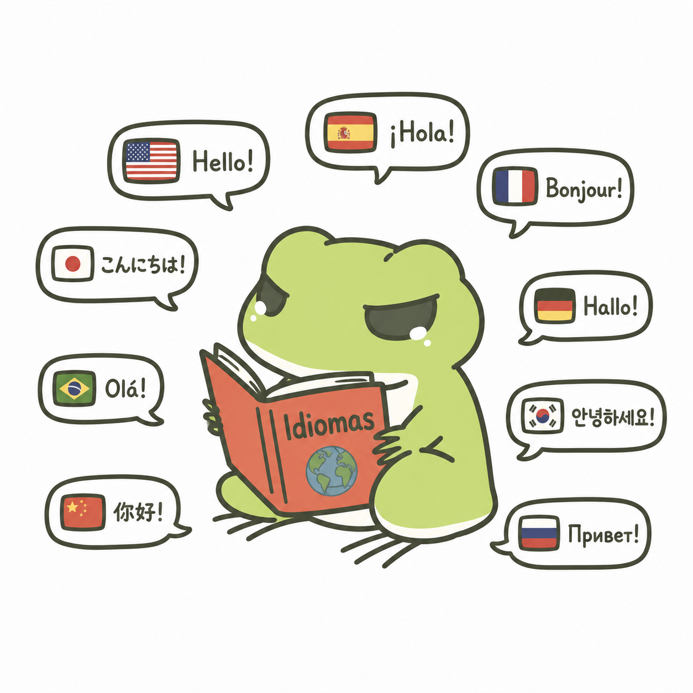

Meus Hobbies

Ler
Um dos meus hobbies favoritos é a leitura, porque gosto da sensação de entrar em histórias diferentes e aprender coisas novas através dos livros. Ler é uma atividade que me ajuda a relaxar, imaginar cenários e refletir sobre diversos assuntos. Entre todos os livros que já li, o meu favorito é O Diário de Anne Frank. Esse livro me marcou muito por contar uma história real cheia de emoções, sentimentos e reflexões sobre a vida durante um período difícil da história. O jeito como Anne Frank escrevia seus pensamentos, sonhos e medos faz com que a leitura seja muito emocionante e profunda. Além de ser uma obra muito importante historicamente, é também um livro que inspira reflexão, empatia e valorização da liberdade e da esperança.
.jpg)
Ouvir música
Outro dos meus hobbies favoritos é ouvir música, porque a música faz parte do meu dia a dia e me acompanha em vários momentos. Gosto de como cada estilo musical consegue transmitir emoções diferentes e criar atmosferas únicas. Meus gêneros musicais favoritos são MPB, pop, rap, jazz e rock, porque cada um deles tem características que eu admiro, desde letras marcantes até ritmos envolventes e melodias emocionantes. Meu cantor favorito é Kamaitachi, e acompanho suas músicas desde 2018. Gosto muito do estilo único das canções, das histórias presentes nas letras e da forma criativa como ele transforma sentimentos e narrativas em música. Ao longo dos anos, ouvir suas músicas se tornou algo especial para mim, principalmente porque elas marcaram diferentes momentos da minha vida. A música é uma das coisas que mais gosto, porque consegue trazer conforto, inspiração e diversão ao mesmo tempo.

Aprender idiomas
Um dos meus grandes interesses é aprender idiomas, porque acho incrível a possibilidade de conhecer novas culturas e conseguir me comunicar com pessoas de diferentes partes do mundo. Atualmente, falo fluentemente espanhol, inglês, esperanto e italiano, idiomas que aprendi com muito esforço, dedicação e interesse em conhecer mais sobre cada cultura e forma de comunicação. Para mim, aprender uma nova língua vai muito além de decorar palavras ou regras gramaticais; é uma maneira de expandir conhecimentos, criar novas oportunidades e entender melhor o mundo. Além dos idiomas que já falo fluentemente, também tenho uma lista de 20 idiomas que desejo aprender no futuro. Gosto de estudar pronúncia, expressões e diferenças culturais entre os países, e isso torna o aprendizado ainda mais interessante para mim. Aprender idiomas é um hobby que me motiva constantemente, porque sempre sinto que estou descobrindo algo novo e evoluindo a cada etapa do processo.